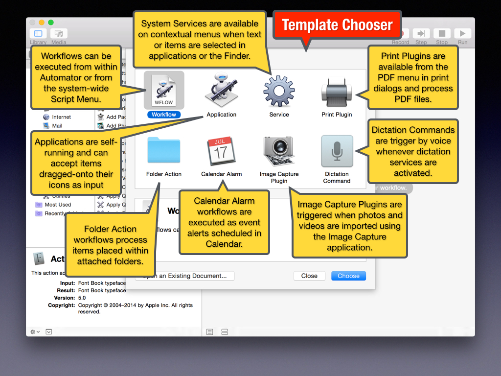
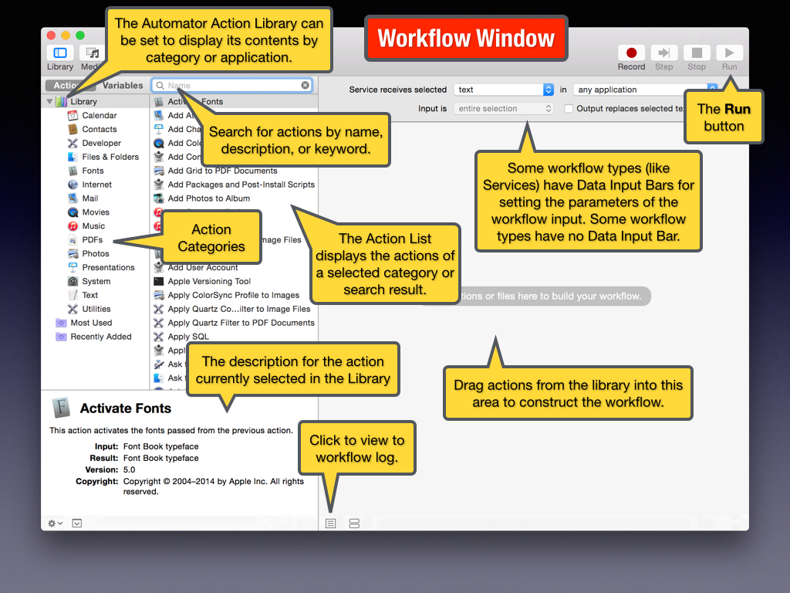
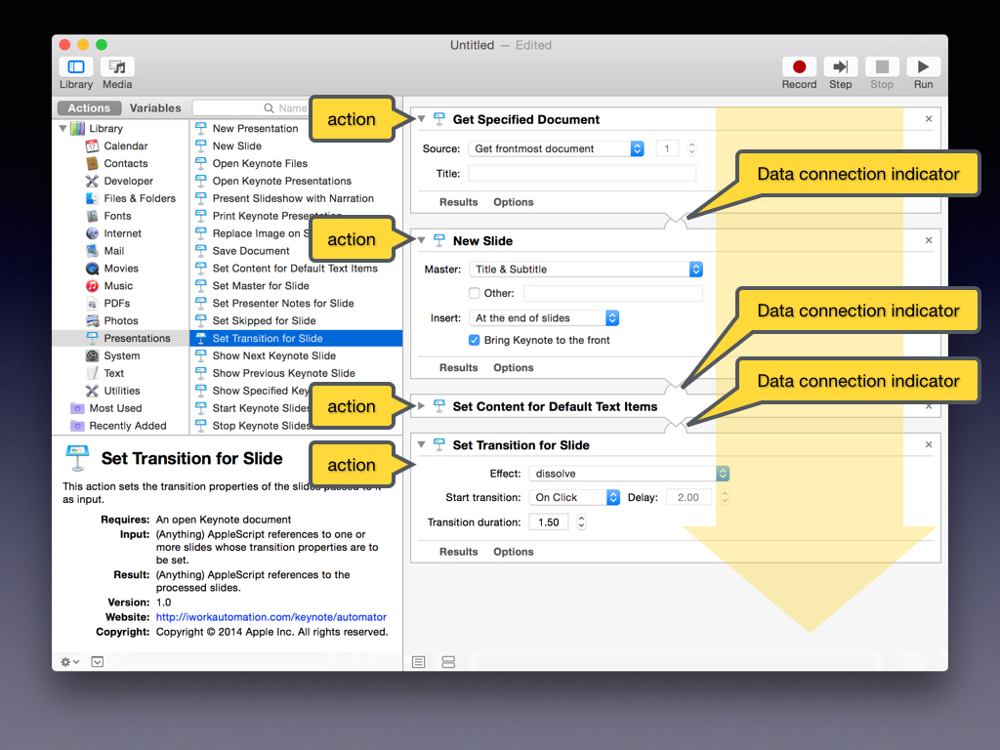

What is Automator?
Automator is an application, installed with every copy of OS X, that is used to construct automation tools using a drag-and-drop process to make a workflow.
What is a Workflow?
An Automator workflow is an automation recipe comprised of a series of automation steps called actions. The actions in a workflow are displayed as a vertical list in the Automator window and are executed in order from the top action to the bottom action.
Workflows often accept data as input, with each action processing its input data and passing the results of the processing to the next action in the workflow.
Automator Workflow Types
Automator workflows can be implemented within the system in a variety of formats. The various workflow options appear as templates in the workflow template chooser sheet when a new Automator document is created. The template options are described in the illustration below:

The Workflow Window
The illustration below describes the areas and controls of the Automator workflow window:

Constructing a Workflow
Think of workflows as automation recipes with each step of the recipe being an Automator action. You create workflows by determining what are the required steps in the automation process, and then adding the actions for accomplishing those steps, to the workflow.
Actions are added from the Automator Action Library to the workflow. Actions are executed in order from the top to the bottom of the workflow, passing data between them.

Learning More About Automator
Many of the automation examples provided in this Keynote-Automator website contain videos demonstrating the creation, saving, and execution of specific workflows. For even more information about Automator, visit the Automator website at: macosxautomation.com/automator